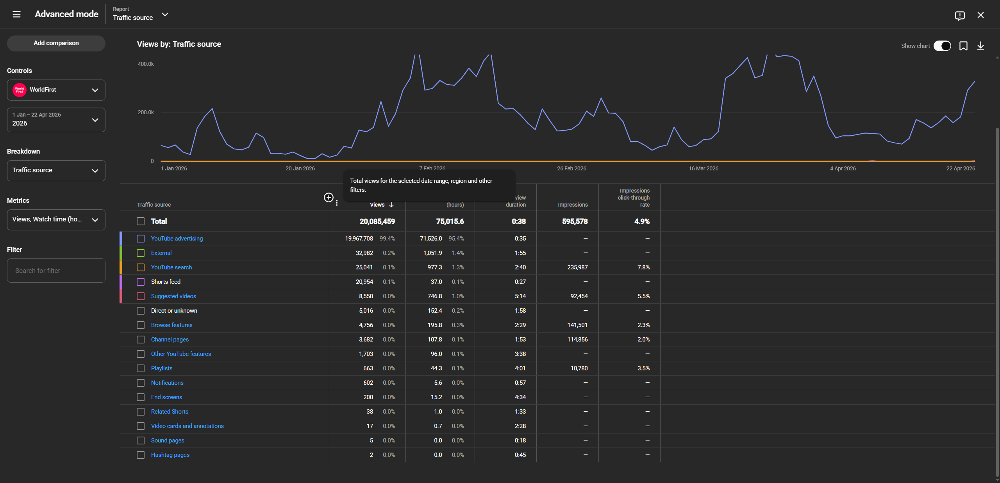
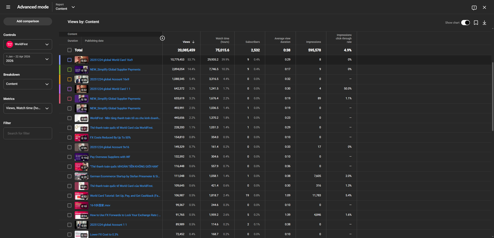
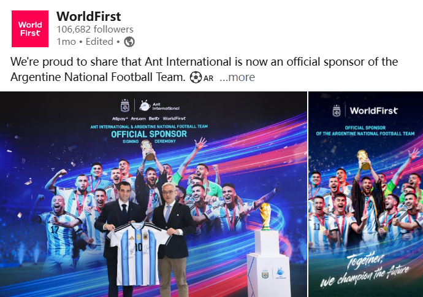
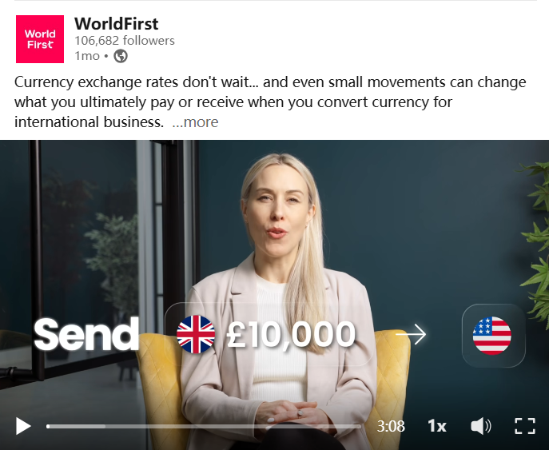
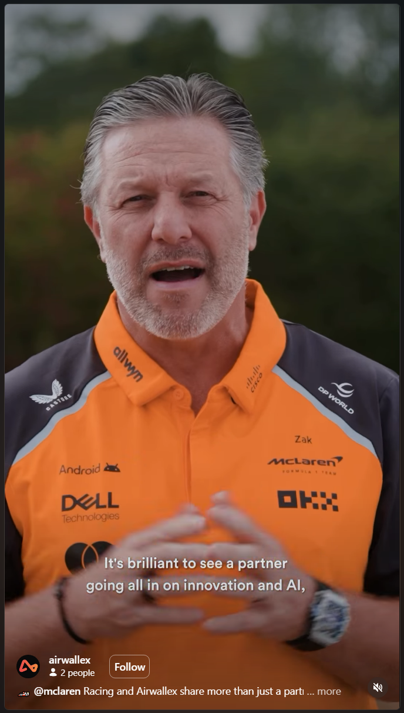

Building upper-funnel awareness for growth. A battle plan for Q2.
Awareness reaches 100% of the ICP. Activation converts the 5% ready to buy.
These are different jobs pointed at different audiences. A complete upper-funnel stack needs both — and today WorldFirst does one well and the other barely at all.
Opening the upper funnel expands the lower one.
When more of the ICP hears about WorldFirst, the activation pool grows, growth accelerates, CPA drops. The lower funnel runs on the demand the upper funnel creates.
Three dynamics shape our upper-funnel specifically.
- Brand architecture — Ant and WorldFirst show up together. Each dollar can do less for WorldFirst specifically unless we have a clear policy on when each brand leads.
- Regional reality — different markets, different messages. SEA isn't Europe. Vietnam isn't the US. Regional intelligence has to be baked into the design.
- Time horizon — awareness plays on a different clock. Activation returns in days; awareness in quarters to years. Continuity compounds; cycling resets.
Upper-funnel is a composition problem, not a channel one.
Teams organise around channels. Peer brands running meaningful upper-funnel land on PR + influencers + social + SEO + events + partnerships + paid + employees simultaneously.
Upper-funnel research of our competitors — and a relook at our current strategy.
Dedicated Fintech Upper-Funnel Study covering 8 competitor cases + WorldFirst's current position. The single clearest benchmark to calibrate against:
The full study covers 8 brands, pillar composition, distribution ecology, platform role maps, and a 5-dimension fit framework. The next six slides pull directly from it.
Read the full Fintech Upper-Funnel StudyWise led with PR-coded category-creation — then shifted to evergreen defence.
- 2014–18 — villain framing “cheap transparent FX” via Guardian-era PR, Westminster protest, hidden-fee campaigns
- Now (mature) — shifted to educational evergreen SEO as the defence moat
- Lost share 2020+ to Revolut Business, Remitly, Atlantic Money as activation-led entrants caught up
Monzo runs lifestyle-led distinctiveness — the opposite shape of Pleo.
- Cultural register — banking humour, coral-card as visual asset, Instagram card-eyes meme
- Distinctive asset + community voice earned right to expand (mortgages, pensions, investing)
- Team built for continuous output: ~20 posts/week
Nubank runs heavy on regional creators — the closest profile to WorldFirst.
- LatAm expansion via localised creators per market — Gusta, Pedro Otoni, Jacira, Aline Diniz, Manu Gavassi
- Educational evergreen high — financial literacy where buyers need it
- Milestone narrative high — visible growth supports trust in new markets
Revolut concentrates on creators — with explicit platform discipline.
- YouTube-first creator program (per Head of Growth Fiona Davies) — long-form personal finance wins
- Explicitly deprioritises TikTok: “one we have not cracked” — platform-fit over platform-presence
- Sidemen sponsorship (2023) added mass UK brand reach after activation had scaled
Pleo anchors on flagship research + educational evergreen.
- CFO Playbook — annual research drumbeat that doubles as awareness + lead gen + sales enablement
- In-house Brand Studio supports original production
- Buyer (CFO) responds to authority over cultural register
Ramp runs channel alpha — paid + partnerships + product-led virality.
- ~$413K/month PPC + productised accountant partnerships
- Social is supporting: thought leadership from operators, executive posts
- Framing: “Not every fintech should be social-led.”
WorldFirst content today is roughly 90% activation.
Our YouTube runs on ads. Organic alone isn't the engine yet.

Views by traffic source · YouTube Studio · Q1 2026
Views by content · YouTube Studio · Q1 2026Upper-funnel itself has two layers.
Identity, distinctiveness. Global consistency. Slow ROI. Compounds permanently.
E.g. WorldFirst × AFA sponsor.

Product benefit. Regional. Creator-led. Creates demand about WorldFirst specifically.
E.g. “Send £10,000 to USD” tutorial.

The question is rebalancing — upper-funnel catches up to activation.
Activation stays strong — it's already our strongest layer.
Upper-funnel gradually gains weight over 3–4 quarters toward the 46 / 54 benchmark. No rebalancing = CPA climbs, pool shrinks.
Content mix matters. Distribution mix matters more.
Calling upper-funnel "social's job" is the core mistake. Same asset, eight channels → outperforms same budget on social alone.
The work: design for the awareness outcome, then distribute across whatever channels carry it best.
Peer brands land on eight channels simultaneously.
WorldFirst handles — LinkedIn, YouTube, Instagram, TikTok.
Their audiences, their voice, their channels.
Social + display boosting to expand reach.
Editorial placement, press relations, broadcast.
Awareness-tier search content, not just activation.
Personal accounts as amplification layer.
Physical + virtual, industry-specific.
Co-marketing, referral, ecosystem.
Airwallex × F1 — every channel carried the same message.

Zak Brown (McLaren F1 CEO) talks about the partnership on Airwallex's own socials. A shared creative spine deployed across all eight channels during the F1 season.
Race-day content, announcements.
F1 community + driver collabs.
Trade press + FT + Forbes pickup.
Paddock hospitality, season-long.
F1-themed global brand ads.
Dedicated F1 landing + hub.
Leadership posts during races.
F1 ecosystem co-marketing.
Three content layers. Three return profiles.
Today we talk about awareness content. Brand matters — we return to it at the end.
Awareness has the biggest expansion headroom and the best short-term impact-to-effort ratio.
Brand is the parallel long-term build — final section of this deck.
Regional creators + short-form carrying Q2 product focus to 20M / month.
- Who — regional creators in priority corridors, not central talking heads
- What — platform-native short-form tied directly to WorldFirst product benefit
- When — two-month concentration, Q2
- How much — 20M impressions per month across priority regions
Regional creators talking about our product.
Short-form videos by operators in each priority region, dedicated to WorldFirst product benefits in their own voice, their own market. Placeholders below — Steven to drop in eight example links.
Why 20M? Awareness needs scale to move the needle.
- At 1M per month we sit below recall threshold in priority regions — noise, not signal
- Awareness cycle — decision-makers need 3+ exposures within ~4 weeks to retain the message
- At 20M per month we clear effective reach — results become measurable
20M per month distributed against paid budget & product focus.
Awareness content built for the paid team's activation targets — same regions, same products. The demand we create feeds the pool they convert.
Bar length reflects paid budget share. Turkey and US / Zyla are TBD — separate creative and brand decisions still being worked through.
After performance read, the path splits.
Vietnam and SEA are already ready. Others need a helping hand from central.
Vietnam and SEA are ready for regional creator collaboration today — local teams own local channels, understand their audiences, have language capability.
Other regions — UK, EEA, ANZ, Longtail — don't have dedicated regional content leads yet. Central steps in with a helping hand: sourcing creators, briefing them on WorldFirst product benefit, co-producing with regional stakeholders.
The metrics we look at.
- Impressions
- Time spent
- Engagement rate
- Completion
- Website visits
- App downloads
- Registrations
- Social audiences
- Website audiences
- Retargeting pool
- Brand-search lift
- Indirect conversion (3 / 6 / 12 mo)
Two months, then we regroup.
After Q2: consolidated hybrid strategy — a mix, not one format winning everything.
Long-term leverage is a combination.
- Brand campaigns
- KLC — Key Leading Customer / customer-ambassador content
- Events, people, culture
- Flagship research
- Value-driven educational
- Comparison + tutorial content
One dashboard. Shared. Upper-funnel + regional + paid.
- UK awareness content works → Vietnam adapts it same day
- Paid team sees the message land → builds activation variants
How awareness and activation work together.
- Consistent communications — same message across both layers, different jobs
- Shared assets — winning awareness creative becomes activation variants
- Shared data — awareness audiences become activation's retargeting pool
One person can run social. Upper-funnel needs a full team.
- Cathy (incoming) — shifting ad-hoc tasks over; owns social publishing + brand content coordination
Additional roles over time (as volume grows):
- Proof / partnership / customer content + employee amplification
- Influencer / KOL program ownership
- Production support for regional content at volume
And — close collaboration with the Branding department. Awareness content only lands when the brand above it is coherent.
A unified brand campaign for the long run.
Awareness content builds medium-term demand. A brand campaign — sustained, distinctive, defensible — is where long-term leverage actually comes from. This is the positioning we'd carry alongside Q2.
Two reminders of what goes wrong when brand outpaces defence.
- Wise, 2014–19 — built the "hidden fees" category for the whole market. Much of the demand got collected by Revolut, Remitly and Atlantic Money. Brand without activation defence subsidised competitors.
- WorldFirst × Spurs — the football sponsorship delivered visibility but hasn't translated into upper-funnel awareness our activation teams can compound. A brand beat without the content layers to carry it through.
Brand campaigns should create awareness that's ours to collect, not competitors'.
FX savings alone is a claim most peers can match. A brand built on it educates the market on a benefit anyone delivers — the strongest activation collects the demand.
The proposition has to anchor to something specifically WorldFirst: our Ant / Alipay depth, CNY routing, 1688 ecosystem, global cross-border footprint. Awareness against that is awareness we can uniquely convert.
Build Your
Cross-Border Moat.
The one idea that says what WorldFirst does that no one else can match — and invites our customers into their own story.
A campaign built around cross-border success stories.
Our customers are cross-border operators. When they share their tips, what they're really describing is their moat — and WorldFirst is part of how they built it. The brand campaign carries those stories.
UK brand sourcing across Asia, selling EU + US, navigating tariff.
Dreame-style Chinese brand selling globally from Chinese manufacturing.
Brand shifting manufacturing China → Vietnam, surviving tariff and thriving.